Guide d'utilisation
Comprendre et piloter la filtration, l'éclairage et le traitement de votre bassin, au quotidien.
Guide du propriétaire — firmware 2.32, septembre 2026
Votre PoolController surveille l'eau de votre piscine (température, pH, potentiel de désinfection), pilote la filtration et l'éclairage, et corrige la chimie de l'eau grâce à deux pompes doseuses. Tout se passe depuis une interface web accessible avec n'importe quel navigateur — téléphone, tablette ou ordinateur. Ce guide fait le tour de chaque écran : ce que vous y voyez, ce que vous pouvez y faire, et les quelques réglages qui méritent votre attention.
Ce guide explique comment se servir de l'appareil. Comment il décide de doser, comment il apprend votre bassin, pourquoi il refuse parfois d'injecter : tout cela est expliqué dans le guide compagnon « La régulation chimique — comment ça marche ». Quand un mécanisme profond affleure dans un écran, un encart comme celui-ci vous y renvoie.
Ce que fait l'appareil, comment s'y connecter, comment lire ce guide.
L'assistant de mise en service, en quatre étapes.
Le tableau de bord et les pages Filtration, Éclairage, Température, pH, Chlore et Produits.
Les messages et situations courantes, et la bonne réaction à chacune.
Les neuf onglets de la page Paramètres, un par un.
Le guide de régulation, et la domotique pour les intégrateurs.
Le PoolController regroupe en un seul boîtier ce qui demande d'habitude plusieurs équipements :
Depuis n'importe quel appareil connecté au même réseau Wi-Fi que le contrôleur, ouvrez un navigateur et tapez :
http://poolcontroller.local
Une page de connexion s'affiche : entrez le mot de passe administrateur que vous avez choisi au premier démarrage (chapitre 2). Si le nom « poolcontroller.local » ne répond pas sur votre réseau — cela arrive avec certaines box ou répéteurs —, utilisez directement l'adresse IP de l'appareil, visible dans Paramètres → Wi-Fi (ou dans l'application de votre box, section « appareils connectés »).
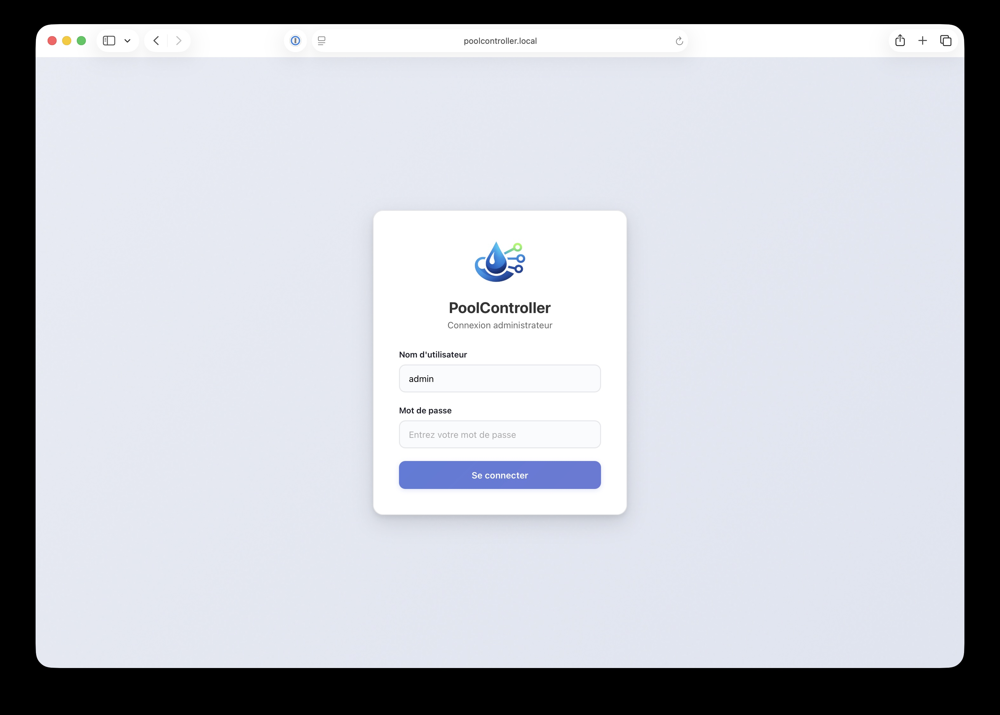
Deux types d'encarts jalonnent les pages qui suivent :
Un renvoi vers le guide de régulation, quand un écran touche à un mécanisme interne (dosage, apprentissage, sécurités). Rien d'urgent : c'est pour comprendre, pas pour agir.
Une action à conséquences : un bouton ou un réglage qui modifie durablement le comportement de l'appareil. Lisez l'encart avant de cliquer.
Au tout premier allumage (ou après une réinitialisation d'usine), l'appareil n'est encore relié à aucun réseau : il crée son propre réseau Wi-Fi, nommé PoolControllerAP. Connectez-y votre téléphone ou votre ordinateur (le mot de passe de ce réseau figure sur l'étiquette de l'appareil), puis ouvrez un navigateur à l'adresse http://192.168.4.1 : l'assistant de mise en service s'affiche. Il vous guide en quatre étapes — impossible d'en sauter une, et revenir en arrière ne défait pas ce qui est déjà enregistré.
C'est le mot de passe qui protégera ensuite l'accès à l'interface. Il doit compter au moins 8 caractères, dont un chiffre et un caractère spécial ; une liste de contrôle et une jauge de force vous accompagnent pendant la saisie. Choisissez-le soigneusement et notez-le : c'est lui qui donne accès à tous les réglages.
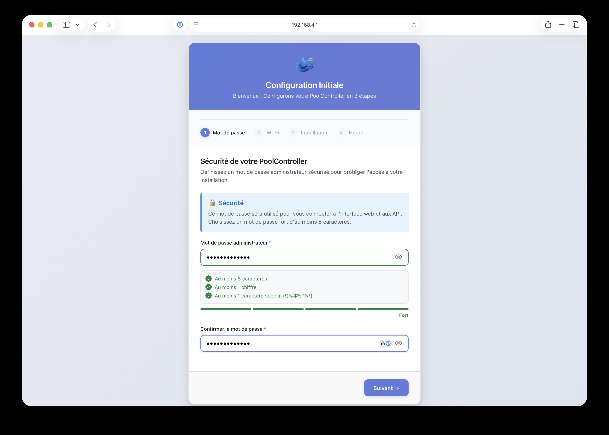
L'appareil recherche les réseaux à portée : choisissez le vôtre et entrez sa clé. Cette étape est facultative — vous pouvez la passer et rester sur le réseau propre de l'appareil, mais vous devrez alors vous y reconnecter à chaque consultation. En pratique, raccordez-le à votre box : l'interface devient accessible depuis toute la maison, et l'heure se règle toute seule par internet.
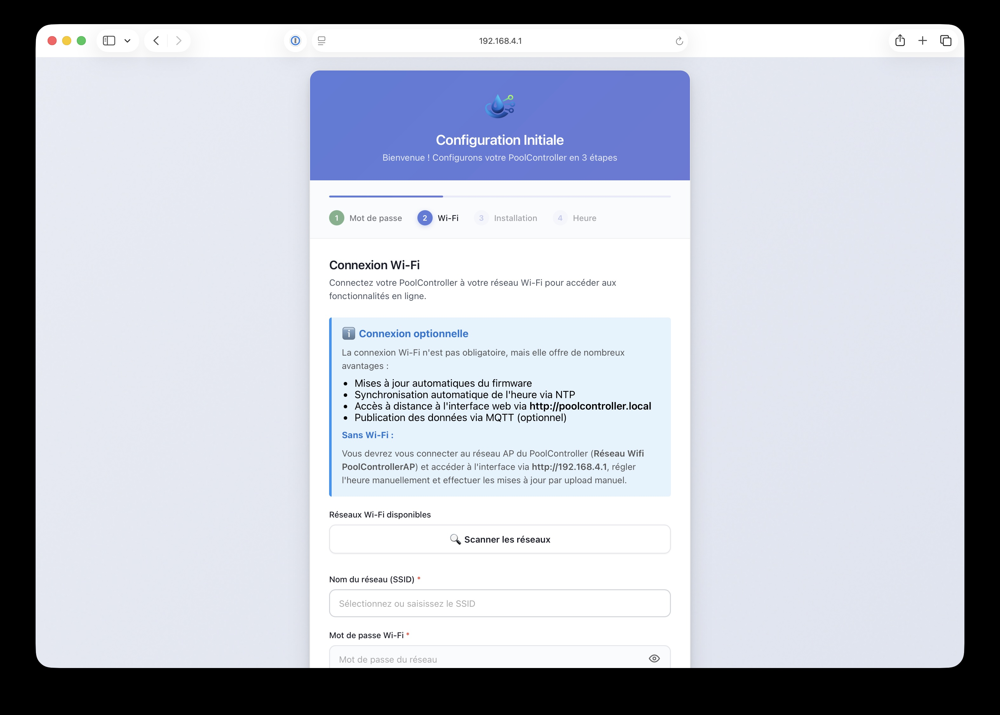
Deux choix sur cette étape, sous forme de cartes à cocher :
Le mode d'installation décrit la façon dont l'appareil est câblé par rapport à la pompe de filtration — c'est ce câblage qui garantit qu'aucun produit n'est jamais injecté dans une eau qui ne circule pas. Trois cas :
La taille du bassin — « Moins de 20 m³ », « 20 à 60 m³ » ou « Plus de 60 m³ » — présélectionne les réglages de rythme de la régulation adaptés à votre volume d'eau. Tous restent modifiables ensuite dans Paramètres → Régulation.
La taille déclarée règle uniquement le rythme de la correction — doucement dans un petit bassin, plus franchement dans un grand. Elle n'entre jamais dans un calcul de dose : la quantité de produit dont votre eau a besoin est apprise par l'observation. Voir le guide de régulation, section « La taille du bassin, seul réglage de rythme ».
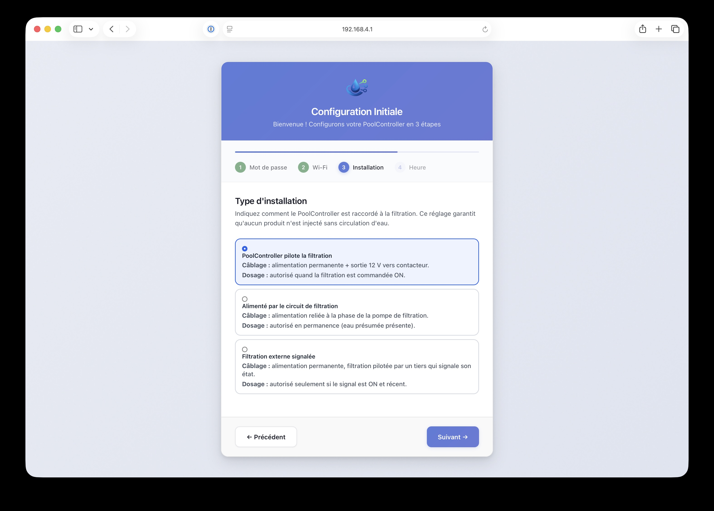
L'appareil a besoin d'une heure juste : les horaires de filtration, les quotas journaliers de produit et l'historique en dépendent. Si vous l'avez connecté à internet à l'étape 2, laissez le réglage automatique (l'heure se synchronise en ligne) ; sinon, saisissez l'heure à la main. Choisissez votre fuseau horaire dans la liste.
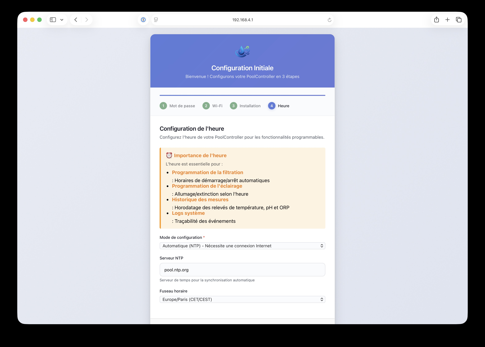
L'assistant terminé, l'appareil vous conduit à l'interface principale. Il ne reste qu'à calibrer les sondes pH et chlore (chapitre 3) avant de laisser la régulation automatique prendre la main.
L'interface s'organise autour d'un tableau de bord — la vue d'ensemble — et de pages dédiées, une par fonction. La navigation se fait par le menu ; chaque carte du tableau de bord porte aussi un petit engrenage qui mène directement à sa page de détail.
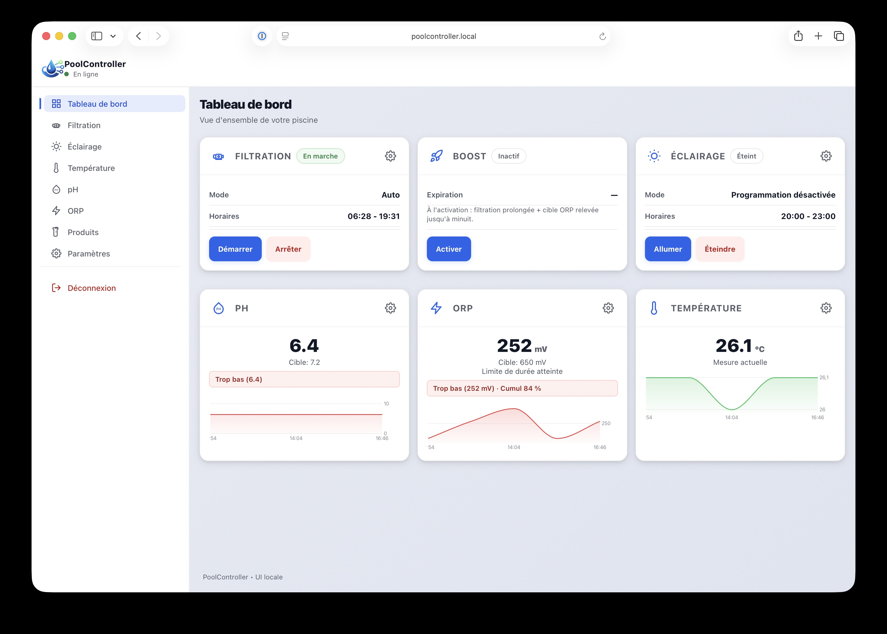
Ce que vous voyez — cinq cartes : Filtration, Éclairage, pH, Chlore (ORP) et Température. Depuis la version 2.63, le Mode Boost n'a plus de carte à lui : il vit dans une section de la carte Filtration (voir plus bas). Les cartes de mesure affichent la valeur courante, la cible, et un mini-graphique de la journée en cours (depuis minuit — les courbes sont donc courtes le matin, c'est normal). Sous chaque valeur, un petit badge résume l'état :
Si le dosage automatique pH ou chlore est refusé, un bandeau apparaît en haut de page, au-dessus des cartes : la voie concernée, la cause en clair, et depuis combien de temps c'est le cas. Il disparaît dès que plus rien n'est bloqué — voir « …un bandeau annonce que le dosage est bloqué » au chapitre suivant.
Deux courbes sur les graphiques pH et chlore — depuis la version 2.38, le mini-graphique ne trace plus un seul signal mais deux :
Auparavant, le nombre affichait le lissé et la courbe traçait le brut : les deux ne parlaient pas du même signal, ce qui prêtait à confusion. C'est corrigé. Sous le graphique, un interrupteur « Brut » permet de masquer la courbe fine — l'échelle verticale se resserre alors sur la mesure lissée, et les petites variations deviennent bien plus lisibles. Le choix est mémorisé par votre navigateur, séparément pour le pH et pour le chlore.
Les petits repères en bas des graphiques pH et chlore — depuis la version 2.47, une ligne de marques au ras du bas indique les moments où une pompe doseuse a fonctionné, et laquelle :
Survolez un point de la courbe : l'infobulle nomme la ou les pompes concernées (« Dosage pH », « Dosage chlore »). La couleur ne porte jamais seule l'information. Les deux repères peuvent apparaître en même temps sur un même instant : les deux régulations sont indépendantes. Le graphique de température n'a pas de repères de ce genre : aucune pompe ne la corrige.
Un détail à connaître pour ne pas s'inquiéter : la courbe lissée ne remonte qu'à environ 8 heures, alors que le graphique peut couvrir toute la journée. Ce n'est pas une panne — c'est la profondeur d'enregistrement de cette mesure. Avant cette limite, le trait brut redevient simplement la courbe principale, et la légende signale le cas quand il n'y a aucune mesure lissée sur la période affichée.
Les graphiques des pages pH et Chlore, eux, sont inchangés : ils résument une journée par point, une échelle à laquelle la mesure lissée et la mesure brute sont de toute façon confondues.
Quand une mesure n'est pas disponible — ou pas représentative, par exemple filtration à l'arrêt —, la valeur affiche « -- » et le badge explique pourquoi. L'appareil préfère avouer qu'il ne sait pas plutôt que d'afficher une valeur douteuse.
Depuis la version 2.63, la carte Filtration propose quatre boutons — Auto, Programme, Marche, Arrêt — à la place d'une ligne de texte : cliquez sur celui que vous voulez, il reste en évidence. Aucun bouton n'est grisé : même en Arrêt, vous pouvez toujours cliquer « Auto » pour en sortir.
Juste au-dessus des boutons, deux informations distinctes apparaissent : le mode demandé (« Mode Auto », etc.) et l'état réel de la pompe (« En marche » / « Arrêtée », ou « Hors gel » en orange pendant une pause anti-gel). Les deux peuvent afficher des choses différentes sans que ce soit une panne : en mode Auto, hors créneau programmé, le mode affiche « Mode Auto » et l'état affiche « Arrêtée » — c'est exactement ce qui est censé se passer, la pompe attend simplement son prochain créneau. Ce n'est qu'en combinant les deux informations que vous savez à la fois ce qui a été demandé et ce qui se passe réellement.
Sous la valeur de pH et de chlore, une barre de position s'ajoute désormais au graphique (elle ne le remplace pas) : un repère indique en un coup d'œil où se situe la mesure actuelle.
Filtration à l'arrêt, les deux barres se grisent : la mesure n'est plus représentative (voir plus haut).
Ce que vous pouvez faire — choisir le mode de filtration (ci-dessus), allumer ou éteindre l'éclairage, et activer l'un des deux modes temporaires, indépendamment l'un de l'autre : ils peuvent fonctionner en même temps.
Depuis la version 2.55.1, le Mode Boost (section de la carte Filtration depuis la version 2.63, auparavant une carte à part) n'a plus de bouton « Activer » pour la chloration de secours : l'activation se fait depuis le bandeau « Dosage bloqué » (chapitre 4) au moment précis où elle est pertinente, ou via l'interrupteur Home Assistant / MQTT.
Depuis la version 2.55.2, cette section ne montre plus aucune trace de la chloration de secours : au repos comme pendant son activité, elle ne contient que le Mode Boost. Quand le mode est actif, son état, son échéance et son bouton « Arrêter » apparaissent dans un bandeau dédié en haut de page, au-dessus de la grille de cartes — comme la bannière qui signale des mesures non représentatives. Ce bandeau ne peut être ni masqué ni replié : un dosage à l'aveugle en cours reste visible tant qu'il dure.
Si les deux modes sont activés en même temps : le Mode Boost affiche l'effet réellement obtenu (par exemple « Filtration prolongée + chloration de secours »). C'est volontaire : en Chloration de secours, le Boost ne relève plus la cible de chlore (il n'y a plus de cible à relever, le dosage ne regarde plus l'ORP), mais il continue de prolonger la filtration — utile précisément pour faire circuler une eau chargée en matière organique.
Enfin, si la régulation venait à s'arrêter alors qu'elle devrait tourner, une bannière rouge l'annonce en tête du tableau de bord avec un bouton « Diagnostiquer » — voir le chapitre 4.
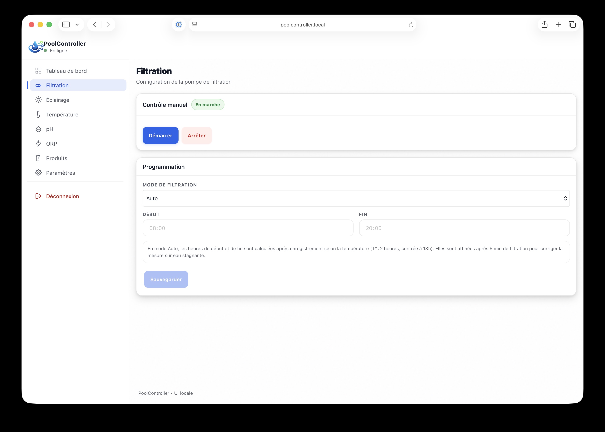
Ce que vous voyez — l'état actuel (Marche / Arrêt) et la configuration : le mode et les horaires du jour.
Ce que vous pouvez faire — quatre modes, chacun fait exactement ce que son nom annonce :
Marche et Arrêt durent jusqu'à ce que vous changiez de mode : pas de retour automatique au bout de quelques heures, pas de réinitialisation au redémarrage de l'appareil. Les boutons Démarrer / Arrêter sont un raccourci pour passer directement en mode Marche ou Arrêt.
⚠️ Pensez-y en hivernage ou pendant un entretien : un appareil laissé en mode Arrêt le reste tant que vous n'avez pas changé le mode vous-même.
Si votre installation n'est pas câblée pour que le PoolController pilote la filtration (chapitre 2, étape 3), cette page l'indique et les commandes sont masquées : l'appareil se contente alors de suivre l'état de la filtration, sans la commander.
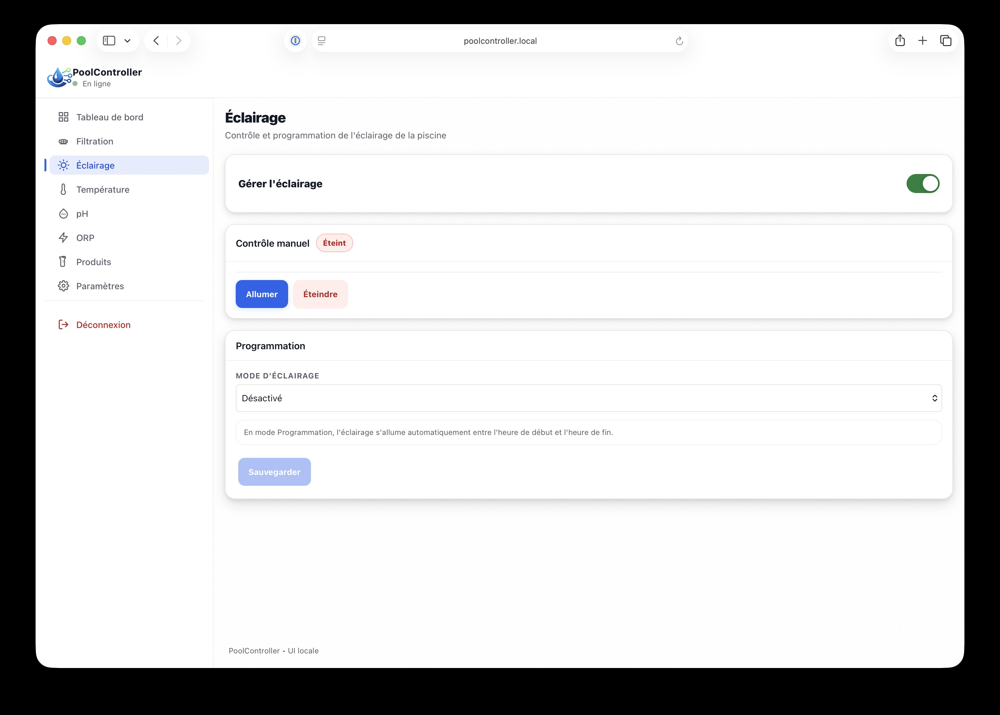
Ce que vous voyez — l'état de l'éclairage (Allumé / Éteint) et sa programmation.
Ce que vous pouvez faire — allumer ou éteindre immédiatement, et, indépendamment, activer une programmation horaire (mode « Programmation » + heures de début et de fin). Les deux ne se gênent pas : un allumage manuel reste possible en dehors des heures programmées. Si votre bassin n'a pas d'éclairage raccordé, le réglage « Gérer l'éclairage » masque toute la fonction.
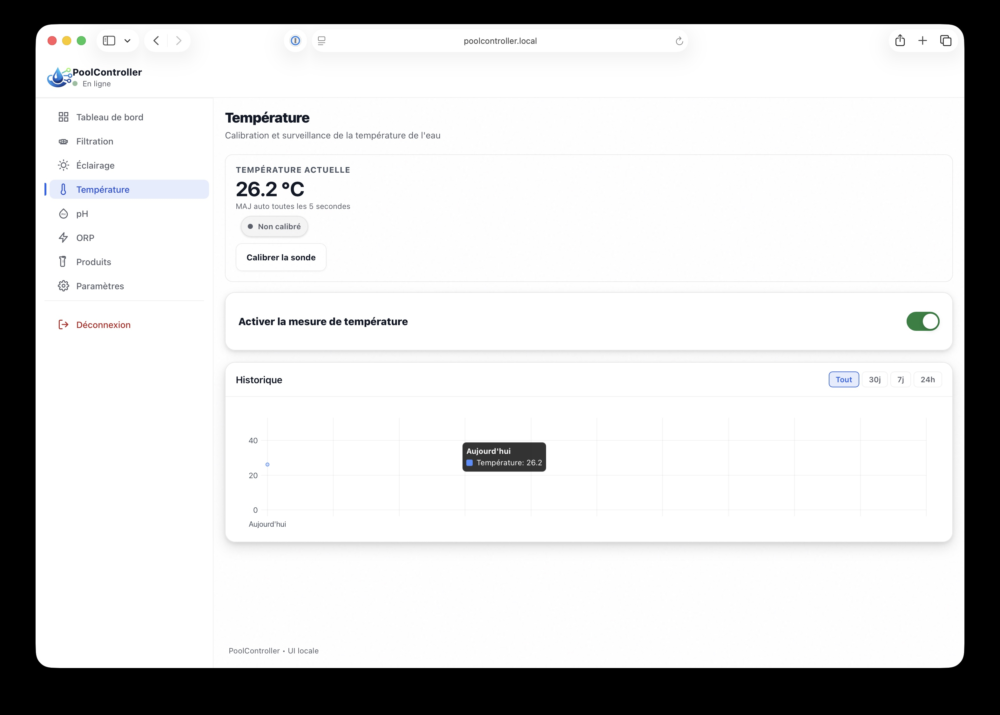
Ce que vous voyez — la température de l'eau en grand, un petit indicateur d'état de calibration (« Calibré · il y a N j », ou « Non calibré »), et l'historique complet (affichable sur tout l'historique, 30 jours, 7 jours ou 24 heures).
Ce que vous pouvez faire — si la sonde mesure légèrement à côté d'un thermomètre de confiance, le bouton « Calibrer la sonde » ouvre un petit assistant en trois étapes : plonger la sonde dans un liquide dont vous connaissez la température, attendre la stabilisation, saisir la valeur de référence. L'appareil retient l'écart et corrige toutes les mesures suivantes. C'est la calibration la plus simple de l'appareil — pas de solution étalon, un simple thermomètre fiable suffit.
L'écart de calibration est plafonné à 5 °C. Une sonde de température dérive de dixièmes de degré : au-delà de 5 °C, ce n'est plus un réglage, c'est une erreur de saisie. Si la valeur de référence est très éloignée de la mesure, l'appareil ramène l'écart à 5 °C, le note dans son journal, et affiche celui qu'il applique vraiment.
« Sonde température figée » — si la sonde d'eau rend exactement la même valeur pendant une journée complète, un badge orange apparaît sur la carte Température du tableau de bord et sur cette page. Une eau réelle, qui traverse un cycle jour/nuit complet, bouge toujours un peu sur 24 heures : c'est le signe que le capteur est en fin de vie. Le dosage continue normalement — l'effet d'une température immobile sur la mesure de pH est de l'ordre du millième, mille fois plus petit que ce qui ferait réagir la régulation. En revanche, tant que ce badge est affiché, le planning automatique de filtration n'est plus recalculé ; il reprend dès que la sonde redevient vivante. Prévoyez le remplacement du capteur, sans urgence. Un badge rouge « Sonde eau non identifiée » est autre chose : il signifie qu'aucune sonde n'a été désignée comme celle du bassin, et cela se règle dans les paramètres.
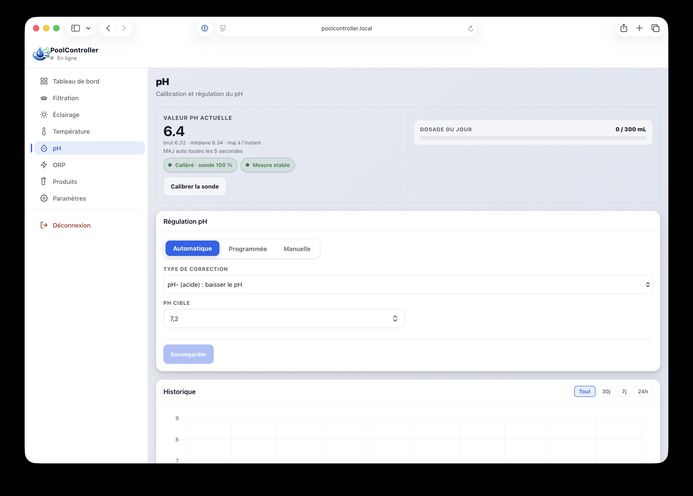
Ce que vous voyez — le pH courant en grand, deux pastilles d'état (l'une pour la qualité de la mesure, l'autre pour la santé de la sonde — cliquez-les pour le détail), la dose du jour (une barre de progression vers le quota journalier), et l'historique. Sur le graphique, la zone comprise entre 7,2 et 7,6 matérialise la plage idéale de l'eau, et une ligne pointillée marque votre consigne.
Sous la barre de dose, le maximum journalier livrable sur la journée de filtration programmée est affiché discrètement.
Nouveau en 2.46. En mode Automatique, une carte présente en un seul endroit tout ce que la régulation a en tête. Elle remplace quatre morceaux qui s'étaient empilés au fil des versions (rattrapage, dose apprise, débit soutenable, bandeau de limite).
| Ligne | Ce qu'elle dit |
|---|---|
| Dose de base apprise | La part que l'appareil verse parce qu'il connaît votre bassin (chapitre 2 du guide de régulation). Entre deux injections, la ligne affiche la valeur apprise avec la mention « en attente — appliquée à la prochaine session » : vous savez donc toujours ce que l'appareil a en mémoire. |
| Écart courant | La part qui répond à l'écart du moment. Elle peut être négative (affichée « −0,35 mL/min ») quand le pH est passé sous la consigne : c'est normal, et c'est la régulation qui freine. |
| Rattrapage accumulé | La correction lente mise de côté pour compenser une dérive permanente, avec sa réserve en pourcentage. |
| Demande | Le total : ce que la régulation réclame à cet instant. En note, le plafond que votre limite horaire autorise « en moyenne sur l'heure ». |
La pompe ne débite pas « au ralenti » quand elle atteint sa limite horaire : elle sert la demande, puis s'arrête jusqu'à l'heure suivante. Afficher un débit rabaissé au plafond sous-estimerait donc d'environ 17 % ce que le bassin reçoit dans les dix minutes qui suivent. Le total dit ce qui est demandé, la note dit ce que la moyenne horaire autorise : les deux nombres sont vrais, et ils ne disent pas la même chose.
Une pastille en haut de la carte dit l'instant, en trois couleurs seulement : verte « Injection en cours » (la pompe est commandée), grise pour tous les états d'attente normaux (« Pause mélange · 12 min » avec son compte à rebours, « Filtration arrêtée », « pH à la consigne », « Limite horaire atteinte »…), et rouge uniquement en cas de panne (« Dosage suspendu · … »). Une pause n'est pas un avertissement : il n'y a donc pas d'orange.
Quand une valeur n'existe pas, la ligne affiche un tiret, jamais un zéro — et la raison est écrite juste à côté. Filtration à l'arrêt ? L'écart et la demande passent au tiret, mais la dose apprise et le rattrapage restent affichés : ce sont des grandeurs lentes, toujours vraies. Si la pompe n'a jamais été pesée, un pied de carte le rappelle : les débits reposent alors sur le débit d'usine.
Seule l'alerte « Capacité de dosage insuffisante », juste sous la carte, appelle une action de votre part (chapitre 4).
Ce que vous pouvez faire — choisir le mode de régulation :
Les quatre lignes de la carte « Débit d'injection » sont les trois termes de l'équation de régulation, plus leur total. Le détail — la part apprise, la part réactive, les pauses de mélange, les plafonds empilés, les seuils de sécurité — est expliqué pas à pas dans le guide de régulation, sections « Le voyage d'une correction » (étapes 6 et 7) et « La dose de base apprise ».
Le réglage « Type de correction » déclare le produit branché sur la pompe pH : pH- (acide, pour baisser le pH) ou pH+ (base, pour l'augmenter). Ne le changez que si vous changez réellement de type de produit — un simple changement de bidon n'en est pas un. Ce réglage inverse le sens de la correction et met en pause la mémoire apprise de l'appareil le temps d'observer le nouveau produit.
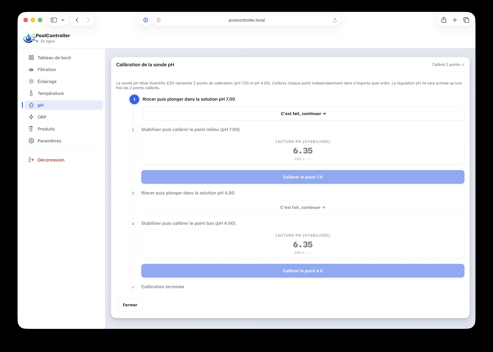
La sonde pH se calibre avec deux solutions étalon (pH 7,00 puis pH 4,00). Le bouton « Calibrer la sonde » — toujours accessible, quel que soit le mode — ouvre un écran guidé : rincer la sonde à l'eau distillée, la plonger dans la première solution, attendre la stabilisation (une minuterie de 60 secondes vous aide, et la valeur lue s'affiche en direct), calibrer, puis recommencer avec la seconde solution. Tant que la calibration n'est pas complète (2 points), la régulation automatique du pH reste volontairement inactive. À refaire en début de saison, ou quand l'indicateur de santé de la sonde le suggère.
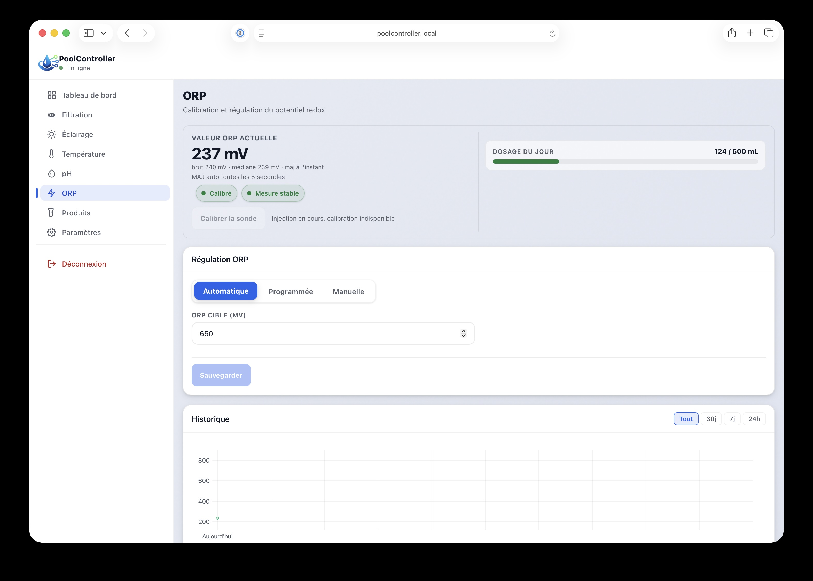
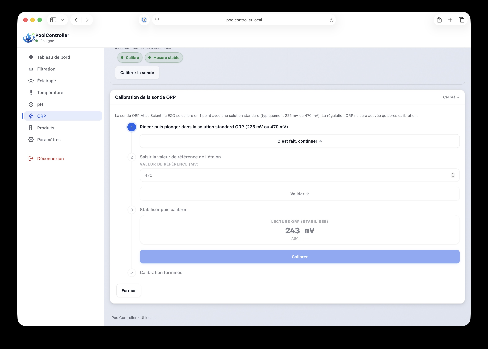
Ce que vous voyez — la page est construite comme la page pH : valeur courante en grand (en millivolts), pastilles d'état, dose du jour, historique avec la ligne pointillée de votre consigne. Pas de « plage idéale » ombrée ici : contrairement au pH, il n'existe pas de plage universelle du potentiel de désinfection — la bonne cible dépend de votre eau.
Ce que vous pouvez faire — les trois mêmes modes que le pH : Automatique (l'appareil tient votre cible en millivolts), Programmée (volume quotidien de chlore réparti sur la filtration, sans regarder la mesure) et Manuelle (injections à la demande). La calibration de la sonde se fait en un seul point, avec une solution étalon dont vous saisissez la valeur (les kits courants : 225 ou 470 mV) — même écran guidé que le pH, minuterie comprise.
Nouveau en 2.46. En mode Automatique, la page chlore présente la même carte que la page pH, mais avec deux lignes seulement : « Écart courant » et « Demande ». Ce n'est pas une version au rabais : le chlore est régulé plus simplement que le pH — pas de dose de base apprise, pas de rattrapage accumulé, juste une réaction à l'écart du moment. La carte le montre au passage.
Sa pastille répond enfin à la question la plus fréquente, « pourquoi la pompe chlore ne tourne-t-elle pas ? » : « Injection en cours » en vert, ou l'une des attentes normales en gris — « Pause mélange · N min », « Limite horaire atteinte », « Filtration arrêtée », ou « pH trop haut, chlore peu actif » (voir l'encadré ci-dessous).
La carte porte cette phrase en permanence, et il vaut la peine de la lire deux fois : la régulation chlore corrige l'écart courant sans rattrapage cumulé — un écart résiduel permanent est normal et ne demande ni consigne plus haute, ni gain plus fort.
Il est également normal que la boucle chlore atteigne tous les jours sa limite horaire, et la carte le dit (« la limite horaire autorise X en moyenne sur l'heure »). Avec un stabilisant autour de 35 mg/L, tenir 2,5 à 3 mg/L de chlore libre coûte ce qu'il coûte : c'est le prix de la protection contre les UV, pas un défaut de réglage. Relever la consigne en millivolts ou le gain en réaction à ce message aggraverait la consommation sans améliorer la désinfection. Le bon levier, s'il y a un doute sur le taux réel, reste la bandelette.
La bonne méthode est la bandelette (ou le test à pastille) : mesurez le chlore de votre eau, puis ajustez la cible pour qu'elle corresponde au bon taux. Le pourquoi — et la raison pour laquelle le chlore est suspendu quand le pH est trop haut — est expliqué dans le guide de régulation, section « pH et chlore : deux traitements différents ».
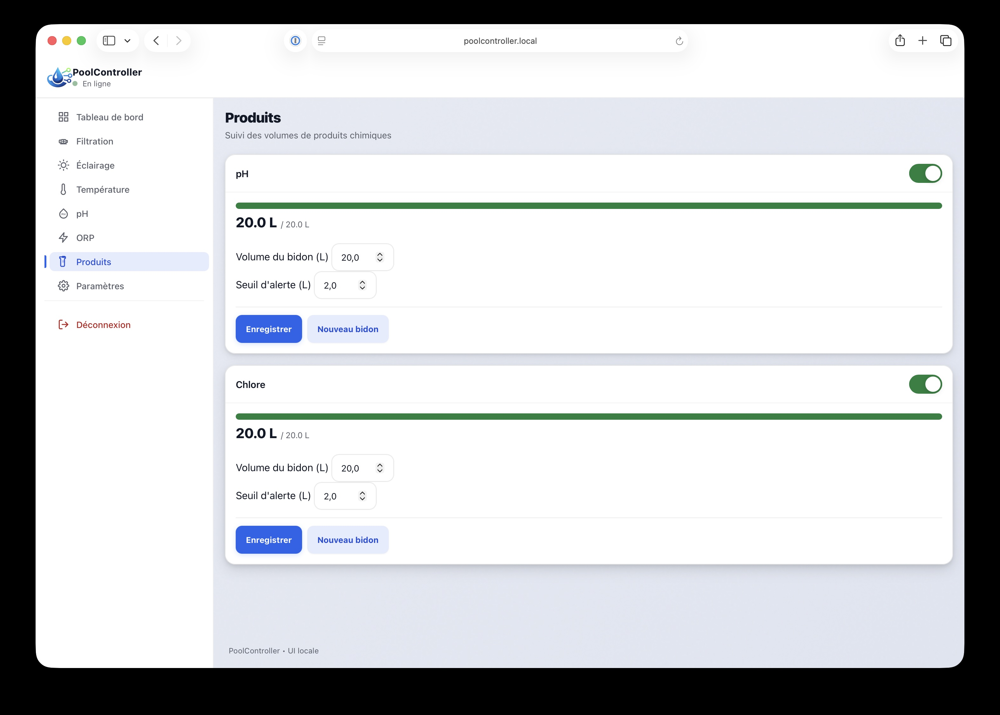
Ce que vous voyez — une carte par produit (pH et chlore), chacune avec une barre « restant / total » : l'appareil décompte chaque millilitre injecté du volume du bidon que vous avez déclaré. Sous un seuil d'alerte réglable (2 litres par défaut), la barre passe au rouge et un badge « Stock faible » apparaît sur le tableau de bord.
Sous la barre, deux nombres sont affichés en permanence : Volume injecté et Démarrages pompe. Ils ne servent pas au quotidien : ce sont les deux valeurs qui permettent de vérifier la précision du comptage de l'appareil. Elles sont là pour que vous puissiez les noter le jour où vous changez de bidon — voir l'encadré ci-dessous.
Ce que vous pouvez faire — la carte se lit en deux blocs distincts. En bas, sous le titre « Réglages », le seuil d'alerte : il s'enregistre tout seul dès que vous le modifiez, et le texte sous le champ le dit en permanence — « Enregistré automatiquement à la modification. » — il n'y a plus de bouton « Enregistrer » sur cette page. Au-dessus, dans un encadré orangé titré « Changement de bidon », le champ « Quantité dans le bidon (L) » et le bouton « Mettre à jour le niveau » — l'encadré signale que cette action est différente : elle demande toujours confirmation et efface toujours le relevé (voir l'encadré ci-dessous), ce que le texte d'aide rappelle désormais explicitement. Ce n'est pas la même action que le seuil d'alerte, et elle ne s'enregistre jamais toute seule.
Ce geste couvre les trois cas sans distinction : bidon neuf, simple appoint sans changer de bidon, ou correction après une mesure au doseur. Dans les trois cas, vous indiquez la quantité qu'il y a maintenant, et l'appareil repart du décompte à zéro avec cette quantité comme point de départ. Il demande confirmation et vous montre le relevé (volume injecté et démarrages de pompe) avant de l'effacer : rien à préparer, il suffit de recopier les nombres affichés. Un premier clic ne détruit plus rien, et le champ reste toujours vide à l'ouverture de la page : il n'y a jamais de valeur pré-remplie à (mal) réutiliser.
Il n'y a plus de distinction à faire entre « je change de bidon » et « je fais l'appoint sans le changer » : les deux se traitent de la même façon, avec le même bouton. Peu importe que votre jerrican fasse 5, 10 ou 20 litres de contenance — ce n'est jamais ce que vous saisissez ici. Vous saisissez uniquement ce qu'il contient maintenant : 5 L restants auxquels vous avez ajouté 2 L se saisissent « 7 », même si le bidon n'a pas changé.
Quand vous mesurez le produit restant dans le bidon que vous remplacez (au doseur, ou à la pesée), notez aussi les deux nombres affichés dans la fenêtre de confirmation : volume injecté et démarrages pompe. C'est ce couple qui permet de dire pourquoi l'appareil compte légèrement plus de produit qu'il n'en sort réellement, et donc de corriger le comptage plus tard. Un nombre seul ne sert à rien.
Si la fenêtre affiche l'avertissement « Relevé peu fiable », notez-le tel quel : l'appareil signale que du produit a été compté dans des conditions où il ne peut pas garantir la mesure. Le relevé reste utile — mais il ne sera pas exploitable seul.
Rien de tout cela n'affecte le dosage : l'appareil mesure, il ne change rien à sa conduite. Et l'écart connu va dans le sens prudent — l'appareil croit avoir injecté un peu plus que le réel, donc ses limites de sécurité se déclenchent un peu tôt, jamais trop tard.
Deux précisions utiles : ce suivi est indicatif — un bidon affiché vide ne bloque pas le dosage (ce sont les limites journalières qui protègent le bassin, pas ce compteur) ; et mettre à jour le niveau n'a aucun effet sur ce que l'appareil a appris de votre bassin — la mémoire porte sur la consommation de l'eau, pas sur le contenant.
Les situations les plus courantes, et la bonne réaction à chacune. Règle générale : les badges bleus disent « attendez », les rouges disent « agissez ».
C'est normal. Filtration à l'arrêt, l'eau ne circule pas devant les sondes : les mesures ne reflètent plus le bassin, l'appareil les masque (badge bleu « Filtration arrêtée »). Au redémarrage de la filtration, l'eau immobilisée toute la nuit dans les canalisations doit d'abord être chassée : elle a un pH artificiellement bas et un chlore consommé, elle ne dit rien du bassin. Pendant ce court délai, le badge affiche « Reprise automatique dans N min » et le dosage reste suspendu.
Combien de temps ? 10 minutes au redémarrage de la filtration : c'est le temps nécessaire pour que l'eau neuve du bassin atteigne les sondes. Depuis la version 2.62, cette attente est une durée fixe, pas une analyse de la mesure : elle ne se prolonge plus certains matins ni ne redémarre en cours de journée sans raison visible. Si l'arrêt de la filtration qui précède a duré moins de trois minutes (petit nettoyage, coupure brève), l'attente est sautée et la mesure est reprise immédiatement.
Le bidon concerné approche du seuil d'alerte. Remplacez-le (ou remplissez-le), indiquez la quantité qu'il contient maintenant, puis — le geste qui compte — cliquez « Mettre à jour le niveau » sur la page Produits (chapitre 3). La fenêtre de confirmation vous montre au passage le relevé à noter : c'est le moment de le recopier.
Le quota de produit du jour est épuisé : le dosage est suspendu jusqu'à minuit. Ce n'est pas une panne, c'est un plafond de sécurité qui protège le bassin d'un surdosage. Si cela se répète plusieurs jours de suite, l'eau a peut-être un problème de fond (stabilisant, alcalinité) : contrôlez-la avec une bandelette complète.
Une bannière rouge dans la carte Régulation pH annonce que l'appareil a basculé de lui-même en manuel, avec la date et la cause : cela arrive après trois refus de sécurité en 24 heures (par exemple un pH déjà trop bas pour recevoir de l'acide). Marche à suivre : traitez d'abord la cause affichée (vérifiez l'eau au réactif, la sonde, le produit), puis cliquez « Acquitter l'alerte ». L'acquittement ne dose rien et ne réactive rien : il vous rend simplement le choix du mode — c'est vous qui repassez en Automatique quand la situation est comprise. Tant que l'alerte n'est pas acquittée, tout retour en automatique est refusé, y compris depuis la domotique.
Le filtre de mesure est resté bloqué plus de 5 minutes alors que la filtration tourne : plus aucun dosage n'est effectué. Cliquez « Diagnostiquer », puis, sur la page concernée, la pastille d'état de la mesure pour ouvrir le détail. En dernier recours, le bouton « Réarmer le filtre » y relance la mesure.
Le réarmement efface aussi les détections de défaut en cours (sonde figée, bruit électrique) : si la sonde est réellement défectueuse, le défaut sera masqué avant d'être re-détecté. Une confirmation explicite est demandée, le dosage reste bloqué environ une minute le temps du réamorçage, et un seul réarmement est autorisé toutes les 10 minutes par sonde.
Ce bandeau est distinct de la bannière « Régulation à l'arrêt » ci-dessus : il apparaît dès que le dosage automatique pH ou chlore refuse d'injecter, quelle qu'en soit la raison, et précise depuis combien de temps. Une cause fréquente et normale est la filtration à l'arrêt : il n'y a rien à faire, le dosage reprendra à la prochaine mise en route. Le bandeau disparaît dès que le dosage redevient possible.
Quand la cause tient à une mesure pour l'instant indisponible (sonde qui vient tout juste de reprendre après l'arrêt de la filtration, mesure jugée aberrante…), le bandeau propose un bouton « Ouvrir l'injection manuelle ». C'est un simple raccourci vers l'écran d'injection manuelle habituel : aucun volume n'est présélectionné, et une confirmation vous rappelle les précautions propres à la voie concernée avant d'y accéder. Pour le chlore, contrôlez toujours le chlore libre au réactif avant d'injecter : l'injection manuelle ne vérifie rien de son côté, c'est à vous de juger si la mesure est fiable. Pour le pH, rappelez-vous qu'une injection d'acide ne se reprend pas.
Depuis la version 2.55, si le blocage concerne le chlore et tient à une vraie panne de capteur (sonde figée, filtre de mesure non prêt), le bandeau propose en plus un bouton « Activer la chloration de secours » — voir ci-dessous. Une confirmation reste nécessaire avant toute activation. Si la régulation du chlore est en mode Manuel, le bandeau l'indique à la place : la chloration de secours n'est pas disponible tant que vous dosez vous-même. Depuis la version 2.62, ce bouton n'est plus proposé pendant la simple attente de reprise après un arrêt de filtration (devenue courte et annoncée à l'écran, voir chapitre 3) — un volume fixe de chlore pendant une attente de quelques minutes n'aiderait à rien. Il reste proposé sur les pannes de capteur qui durent réellement.
Depuis la version 2.55.1, c'est devenu le seul endroit d'où activer ce mode depuis le tableau de bord : le bouton « Activer » a disparu de la carte « Modes temporaires ». Le bouton du bandeau ouvre directement la confirmation, au lieu de vous renvoyer vers la carte.
Depuis la version 2.55.2, quand le mode est déjà actif, ce bouton disparaît aussi du bandeau « Dosage bloqué » : proposer d'activer un mode qui tourne déjà n'aurait aucun sens. Le texte expliquant la cause du blocage et le bouton « Ouvrir l'injection manuelle » restent affichés. Pour suivre l'état du mode une fois activé — et l'arrêter —, voir le bandeau dédié décrit ci-dessous.
Ce mode existe pour une situation précise : de l'eau trouble ou des sondes devenues douteuses (après de fortes pluies, par exemple), qui empêchent la régulation automatique de fonctionner et donc arrêtent tout dosage de chlore — au moment où la demande en désinfectant est souvent la plus forte. Activé depuis le bandeau « Dosage bloqué » (voir chapitre 4) ou via Home Assistant / MQTT, il injecte un volume de chlore fixe, sans tenir compte des sondes, pendant 48 heures au maximum. Une fois actif, son état et son échéance apparaissent dans un bandeau dédié en haut du tableau de bord, qui porte aussi le bouton « Arrêter ».
Depuis la version 2.56, c'est vous qui saisissez ce volume au moment d'activer le mode : la fenêtre de confirmation propose un champ « Volume de chlore par jour (mL) », pré-rempli selon votre configuration (votre cible de dosage programmé si vous en avez réglé une, sinon un repère selon la taille de votre bassin), que vous pouvez modifier ou laisser tel quel — l'activation reste possible sans y toucher. Toute saisie est automatiquement ramenée dans des bornes de sécurité : au minimum 100 mL/jour, au maximum votre limite journalière si vous en avez réglé une, sinon 2 000 mL/jour (même combiné au Boost). Saisir plus de 1 500 mL/jour est accepté, avec un avertissement : au-delà, rien ne prouve que doser davantage aide (voir ci-dessous).
Trois points importants à comprendre avant de l'activer :
Le mode se termine de lui-même de trois façons : vous l'arrêtez manuellement ; les 48 heures maximum sont écoulées (un message vous rappelle alors de contrôler le chlore libre au réactif DPD et le pH avant de faire confiance à la régulation automatique, qui a déjà repris selon votre configuration habituelle) ; ou les mesures de chlore redeviennent fiables pendant 30 minutes d'affilée, auquel cas le mode se désactive automatiquement et la régulation automatique reprend. Dans tous les cas, votre réglage habituel du mode de régulation chlore (Automatique ou Programmée) n'est jamais modifié : la chloration de secours est une surcouche temporaire, pas un changement de configuration.
« Calibration requise » (rouge) : la sonde n'a jamais été calibrée, ou sa calibration a été effacée — la régulation automatique reste inactive tant qu'elle n'est pas faite (chapitre 3). « Sonde usée » ou « à remplacer » : l'électrode vieillit — commencez par une recalibration avec des solutions étalon fraîches ; si le diagnostic persiste, prévoyez le remplacement de l'électrode.
Depuis trois jours, la pompe pH délivre chaque jour tout ce que la limite horaire autorise, sans parvenir à ramener le pH à la consigne : vos réglages ne couvrent pas le besoin du bassin. Deux leviers, dans cet ordre : allonger la durée de filtration quotidienne (plus d'heures de filtration = plus de temps de dosage), ou — seulement après avoir vérifié l'installation — relever la limite horaire d'injection dans Paramètres → Régulation.
À la place d'une page de l'interface, votre navigateur affiche une ligne de texte : « Memoire insuffisante, reessayez ». L'appareil manque momentanément de mémoire libre ; plutôt que de prendre le risque de redémarrer en pleine régulation, il renonce volontairement à vous envoyer la page et vous le dit.
Ce message ne concerne que l'affichage des pages web. Pendant ce temps, la régulation du pH et du chlore, la filtration, l'éclairage, les mesures des sondes et toutes les sécurités fonctionnent normalement. Ne coupez pas le courant : ce n'est pas une panne, et un redémarrage brutal est exactement ce que l'appareil cherche à éviter.
Que faire ? Attendez une dizaine de secondes et rechargez la page. Dans la grande majorité des cas, elle s'affiche de nouveau. Si vous consultez l'appareil depuis Home Assistant ou depuis un autre outil de domotique, rien n'y change : ces liaisons ne sont pas concernées.
Si le message revient souvent, ou dure : c'est le signe d'un problème de mémoire de fond, qu'il vaut mieux signaler. Dès que l'interface répond de nouveau, allez dans Paramètres → Avancé → Journal, téléchargez le journal des événements et transmettez-le : l'appareil y inscrit chaque épisode (début, durée, nombre de pages refusées), même lorsque l'affichage était indisponible. C'est exactement ce qu'il faut pour en trouver la cause.
La page Paramètres regroupe toute la configuration, répartie en neuf onglets. Au quotidien vous n'y toucherez guère : une fois l'appareil en service, seuls Régulation et Système servent de temps en temps.
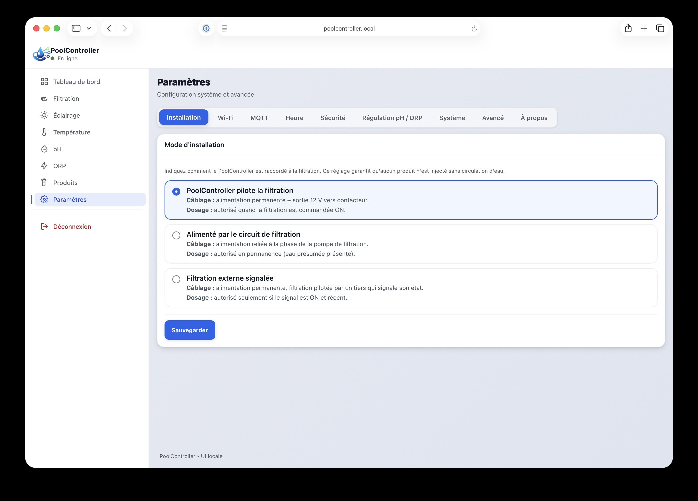
Les trois mêmes cartes que l'étape 3 de l'assistant (chapitre 2) : qui pilote la filtration, et comment l'appareil sait que l'eau circule. Ne changez ce réglage que si le câblage réel change — il conditionne la sécurité « jamais d'injection sans circulation d'eau ». En mode « filtration externe signalée », un encart montre l'état du signal reçu et des exemples prêts à l'emploi pour le brancher depuis votre domotique.
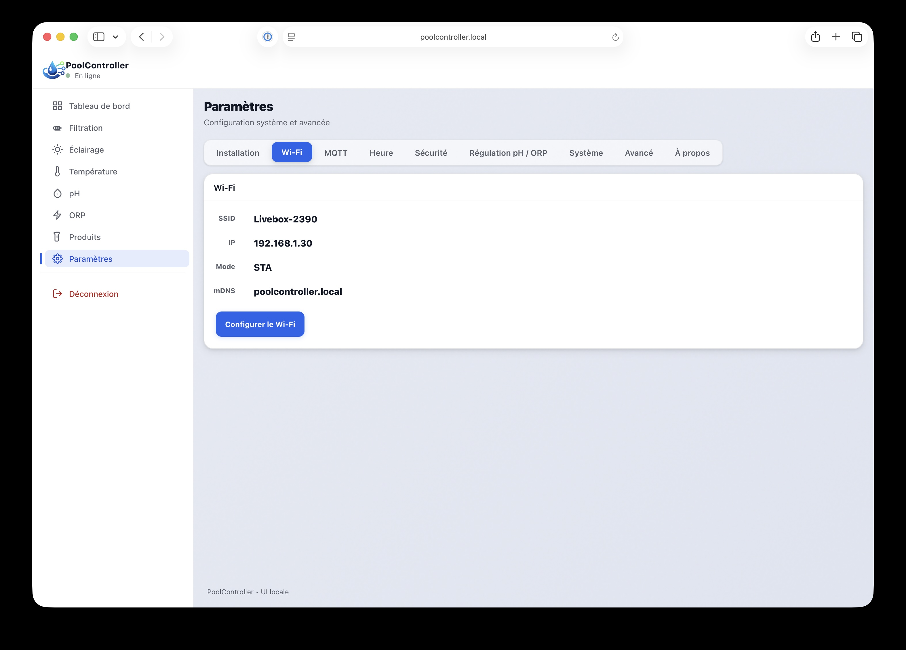
Le réseau auquel l'appareil est connecté, son adresse IP (à noter : c'est le plan B si « poolcontroller.local » ne répond pas) et l'accès à la reconfiguration du Wi-Fi.
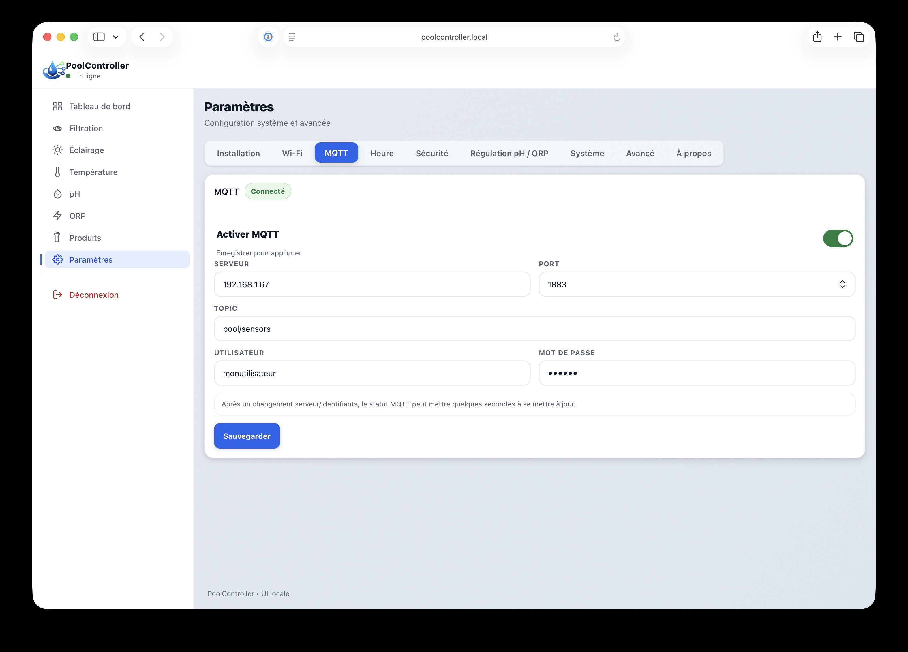
Réservé aux utilisateurs d'une domotique (Home Assistant notamment) : adresse du serveur, identifiants, et une pastille d'état qui dit en temps réel si la liaison est établie. Si vous n'avez pas de domotique, laissez l'onglet désactivé — l'appareil fonctionne entièrement sans.
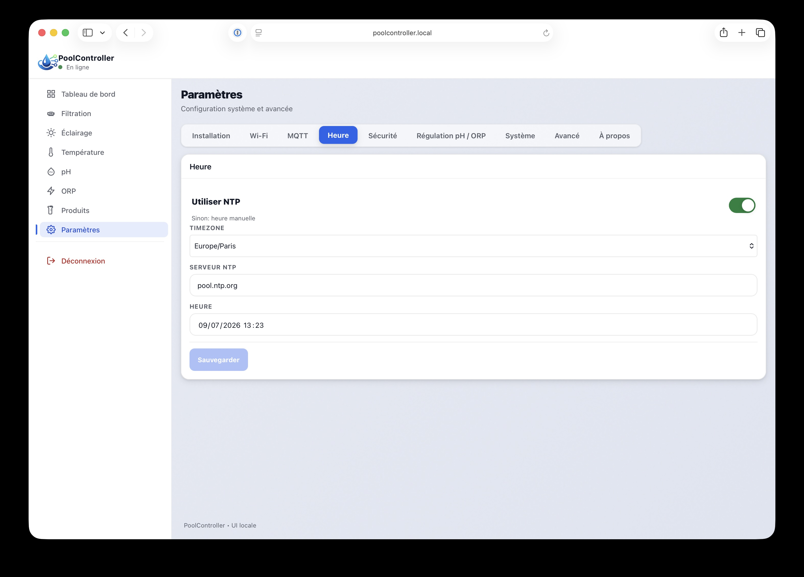
Heure automatique par internet (recommandé) ou manuelle, et fuseau horaire. Un changement de fuseau demande un redémarrage de l'appareil pour s'appliquer.
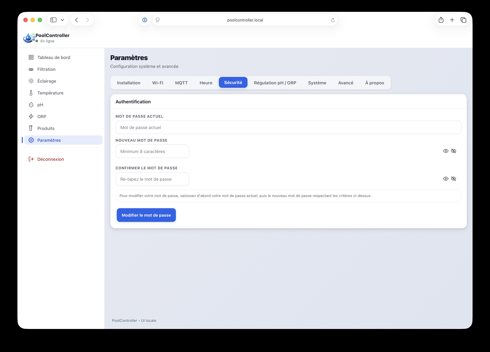
Le changement du mot de passe administrateur — mêmes exigences qu'au premier démarrage (8 caractères minimum, un chiffre, un caractère spécial).
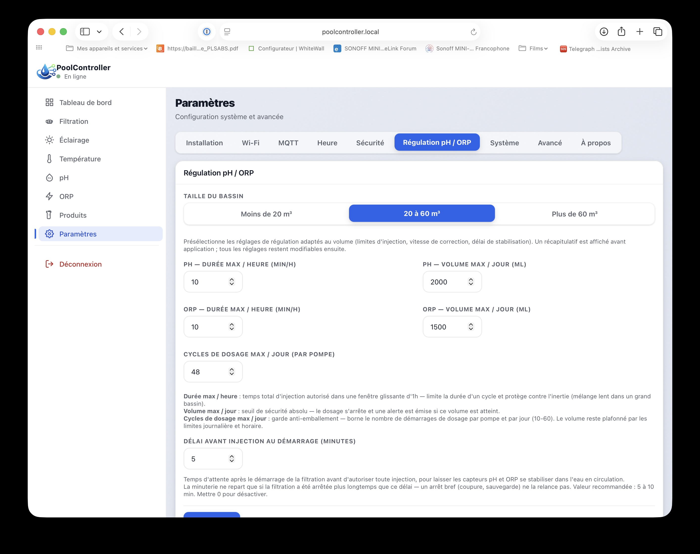
Le cœur des réglages de traitement :
Ce réglage existait jusqu'à la version 2.33 : il fixait combien de temps l'appareil devait attendre, au redémarrage de la filtration, avant de croire ses sondes. Il n'existe plus, et c'est une bonne nouvelle : aucune durée fixe n'était juste — trop courte, l'appareil dosait sur de l'eau de rinçage ; trop longue, il perdait une heure de régulation chaque matin. Depuis la version 2.34, l'appareil avait d'abord essayé de mesurer quand l'eau cessait de bouger pour décider seul de la fin de l'attente (entre 10 et 90 minutes). Depuis la version 2.62, cette analyse est elle-même retirée : elle ne protégeait en réalité pas grand-chose (une mesure durablement fausse ne « bouge » pas, elle passait inaperçue) et coûtait du temps de régulation certains matins. L'attente est redevenue une durée fixe de 10 minutes, sautée après un arrêt d'eau de moins de 3 minutes. Si vous aviez modifié l'ancien réglage, votre valeur reste simplement ignorée : il n'y a rien à faire.
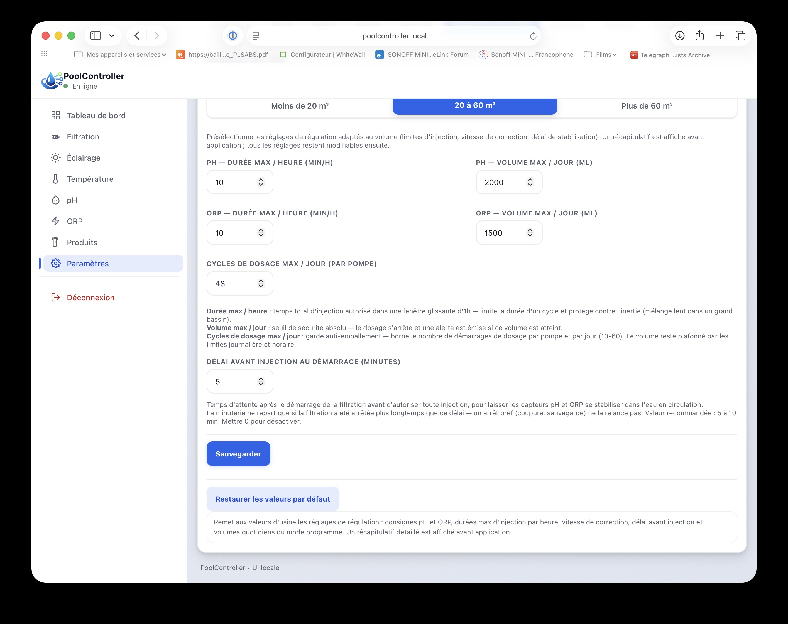
Ce bouton remet les huit réglages de la régulation aux valeurs d'usine de la taille de bassin sélectionnée. Un dialogue récapitulatif « actuel → usine » s'affiche d'abord — lisez les lignes en gras : ce sont elles qui vont changer. Les calibrations des sondes, les modes de régulation et les limites de sécurité ne sont pas touchés. Si tout est déjà aux valeurs d'usine, le dialogue le dit et le bouton reste inactif.
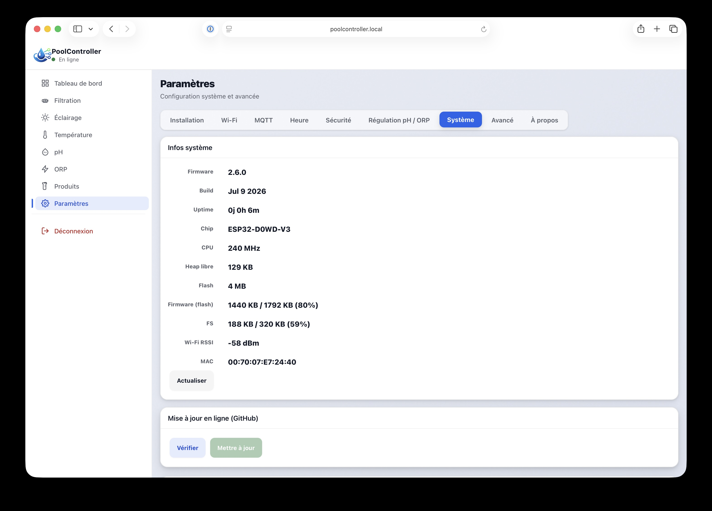
Les informations de l'appareil (version du logiciel, mémoire, réseau) et les mises à jour : en ligne d'un clic (« Vérifier » puis « Mettre à jour » — si votre modèle ne le permet pas, un encart l'explique et renvoie à la mise à jour manuelle), ou manuelle par envoi d'un fichier — le type est reconnu automatiquement d'après le nom du fichier, une notice le confirme sous le sélecteur. On y trouve aussi le bouton Redémarrer (sans danger : aucun réglage n'est perdu) et la réinitialisation d'usine.
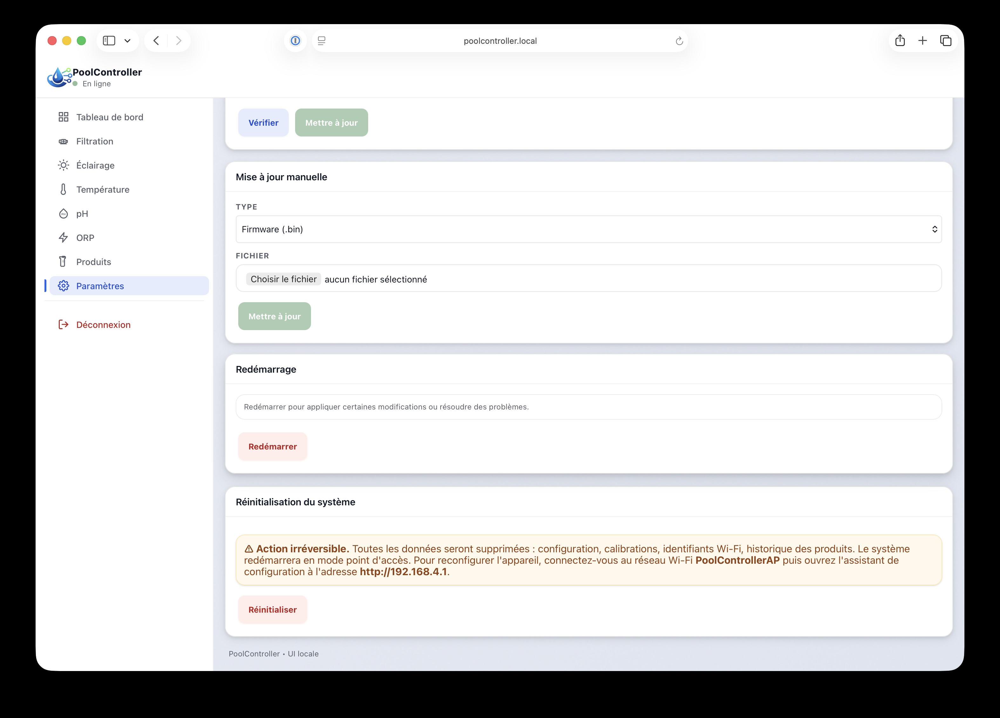
Elle efface tout : Wi-Fi, mot de passe, calibrations, historique, réglages. L'appareil redémarre comme au premier jour, sur son propre réseau Wi-Fi, et l'assistant de mise en service reprend du début. Une double confirmation est demandée — un refus à n'importe quelle étape annule tout.
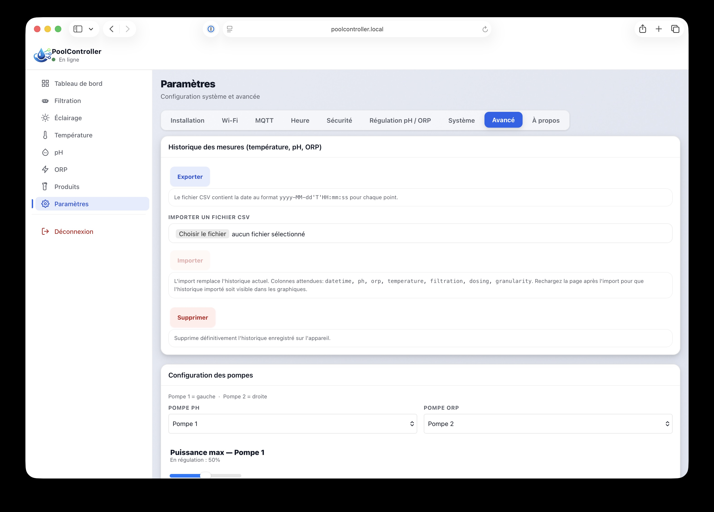
L'onglet du diagnostic et de la maintenance — à visiter quand on sait ce qu'on y cherche :
Choisissez votre fichier CSV, puis l'un des deux boutons :
La taille du fichier n'a plus d'importance. L'interface découpe elle-même l'envoi en petits paquets et affiche une barre de progression. Vous n'avez rien à préparer ni à découper.
Si vous venez de mettre à jour l'appareil, forcez le rechargement de l'interface : Ctrl-Maj-R (ou Cmd-Maj-R sur Mac). Une page restée en mémoire du navigateur envoie l'historique à l'ancien format, en une seule fois, et l'appareil la refuse.
Si l'envoi s'interrompt — coupure Wi-Fi, appareil qui redémarre —, rien n'est perdu : les paquets déjà arrivés restent dans l'appareil. Deux boutons apparaissent alors :
Pendant ce temps, « Remplacer » et « Compléter » sont grisés, volontairement : cliquer « Remplacer » à cet instant effacerait justement ce que vous êtes en train de récupérer. Terminez la reprise, ou abandonnez-la, et les deux boutons redeviennent disponibles.
À la fin, un message indique combien de mesures ont été envoyées et combien l'appareil en conserve. Il peut aussi signaler que des mesures les plus anciennes ont été évincées : l'appareil ne garde qu'un nombre fixé de points, et au-delà il retire les plus vieux. Ce ne sont pas des mesures de votre fichier qui auraient été refusées — c'est simplement que tout ne tient pas.
Enfin, rechargez la page après l'import pour voir l'historique restauré dans les graphiques.
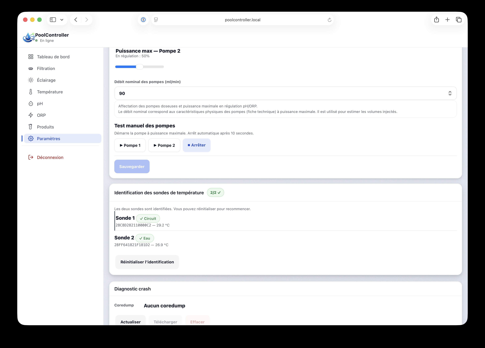
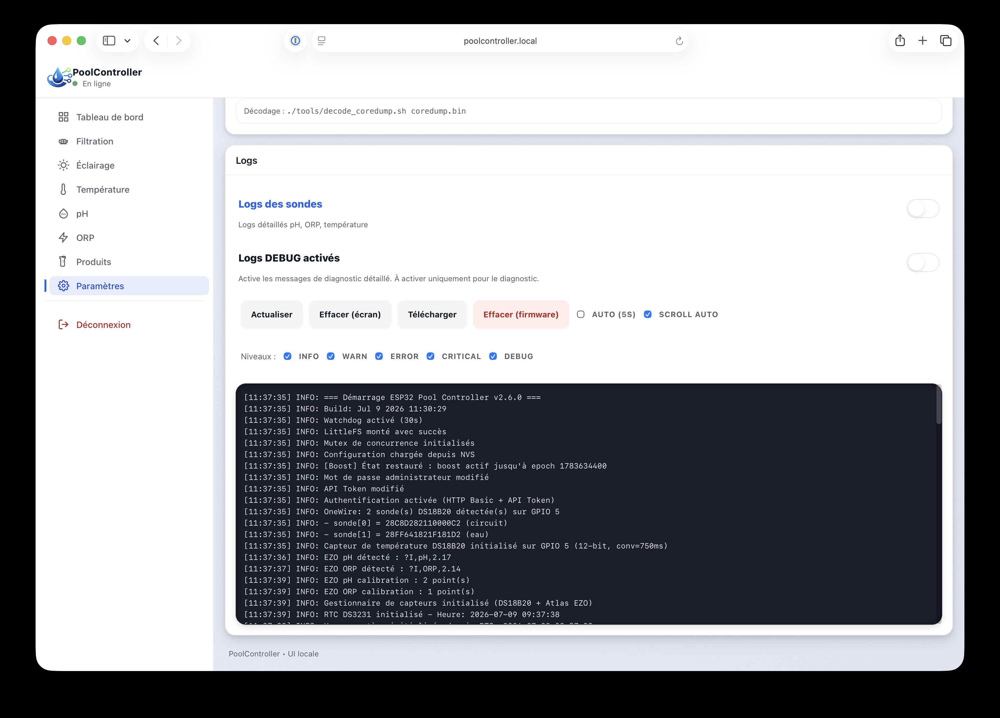
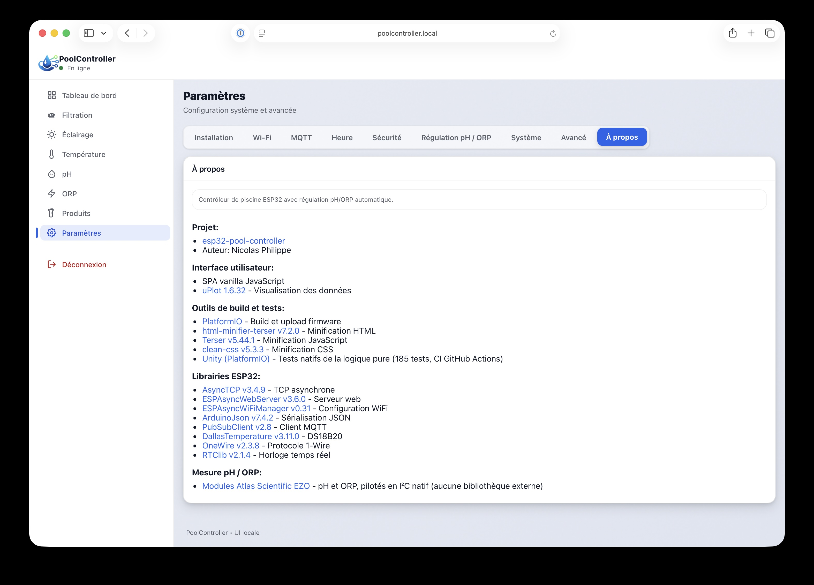
Les versions des composants et les liens du projet. Purement informatif.
Pour comprendre comment l'appareil décide — le voyage d'une correction de la sonde à la pompe, la dose de base apprise, le disjoncteur qui la protège, les tempos du système et les règles que rien ne fait plier —, lisez le guide compagnon « La régulation chimique — comment ça marche ». Il est écrit pour le propriétaire, pas pour l'ingénieur.
Si vous utilisez une domotique : l'appareil sait s'annoncer automatiquement à Home Assistant via MQTT — mesures, modes de régulation, filtration et éclairage y apparaissent comme des entités prêtes à l'emploi (onglet Paramètres → MQTT pour l'activer). Le détail des entités et des commandes est décrit dans la documentation technique du projet, destinée aux intégrateurs.
Document généré depuis la documentation des écrans (docs/features/) du firmware — version 2.32, septembre 2026.